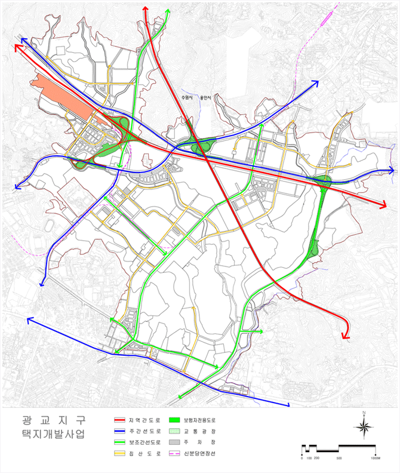

한번쯤 마음에 두었던 도시, 자연이 완성해가는 산소 도시
수원시 유시티입니다.
수원시 유시티입니다.
2016.08.09 15:00
29
비
- 통합대기환경지수
- 보통
- 오존
- 보통
- 미세먼지
- 보통
- 초미세먼지
- 보통
- 부패지수
- 좋음
- 아황산가스
- 좋음
- 이산화질소
- 좋음
- 일산화탄소
- 좋음
광교U-City 호매실U-City
교통
- 광역교통
- 광교지구 택지개발사업에 따른 광역교통 개선대책으로 도로 6개 구간(19.2km)을 신설, 2014년까지 신분당선 연장선 중 정자~광교구간 개통, 환승시설 설치 1개소, 교차로 개선 4개소, 간선급행버스체계(BRT) 1개 구간 구축 신분당선연장선
- 기존의 수도권 5개 신도시보다 낮은 밀도의 자연친화적 중ㆍ저밀도 단지로 개발
- 분당선 정자역에서 화서 및 호매실까지 연결되는 신분당선 연장선의 정자~광교 구간은 2014년 개통
- 동 노선상의 경기도청역(가칭)에는 환승센터 설치하고 철도와 도로교통을 연계함으로서 대중교통 이용 활성화
-
지점 구간 연장(㎞) 차로 시행자 완공년도 정자 ~ 광교 11.9 - 국토교통부 2014
광역도로망
- 영동고속도로(북수원IC~신갈IC)의 정체를 해소하기 위해 우회도로를 신설하여 교통량 분산
- 동수원 및 수원종합터미널과의 연계를 위해 2개 노선의 도로 신설
- 용인~서울간 고속국도를 편리하게 이용할 수 있도록 동수원~성복IC간 도로 신설
- 주변 도로와의 연계가 도모될 수 있도록 도로개설사업 추진
-
지점 구간 연장(㎞) 차로 시행자 완공년도 1 북수원 ~ 상현 IC 간 도로 7.9 4 수원시 2013 2 상현 IC ~ 하동간 도로 2.5 6 광교 시행자 2011 3 흥덕 ~ 하동간 도로 2.1 6 광교 시행자 2011 4 동수원 ~ 성복 IC 간 도로 3.3 4 광교 시행자 2011 5 용인 ~ 서울간 고속화도로(사업비 분담) 2.3 6 국토교통부 2009 6 하동 ~ 삼막곡간 도로(사업비분담) 1.1 6 광교 시행자 2011
입체화 접속시설
- 주변 교차로의 정체해소를 위해 동수원IC 및 창룡문사거리 등 4개소의 교차로를 입체화
-
지점 구간 연장(㎞) 차로 시행자 완공년도 1 상현 IC 교차로 1식 1식 광교 시행자 2011 2 하동교차로 1식 1식 광교 시행자 2011 3 창룡문 사거리 1식 1식 광교 시행자 2010 4 동수원 IC 개량 1식 1식 광교 시행자 2011
기타부문
-
지점 구간 연장(㎞) 차로 시행자 완공년도 1 환승시설(경기도청역) 1식 - 광교 시행자 2011 2 BRT 3.4 - 광교 시행자 2011 3 ITS(용역비) 1식 - 광교 시행자 2010
- 광역교통도 